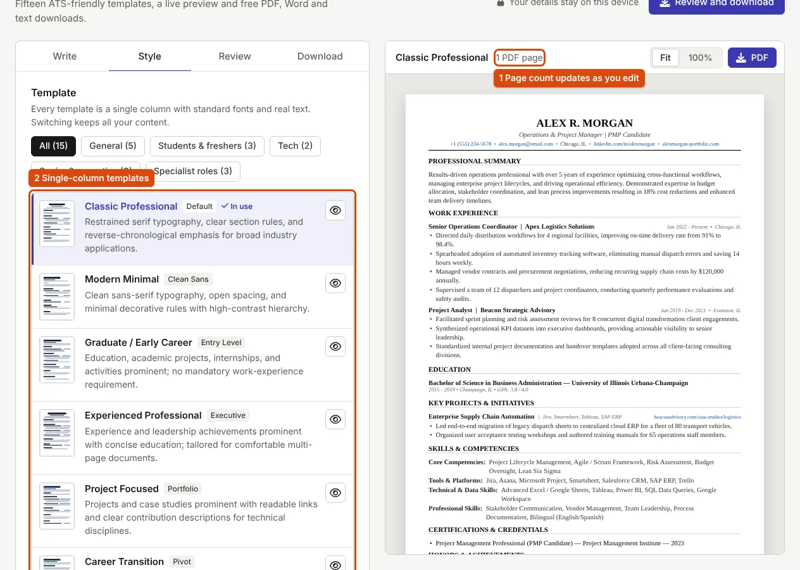

Resume Length: Should Yours Be One Page or Two?
Length is a result of how much relevant evidence you have, not a rule. Here is how to decide, and how to trim or expand without cramming.
The short answer
One page if you are a student, a fresher or have a few years of relevant experience. Two pages when a longer career or many relevant projects genuinely need the space. Longer than two pages is for an academic or research CV, which is a different document; see CV vs resume in India. Length follows from how much relevant evidence you have, not from a rule.
A guide by situation
| Your situation | Usual length | What fills it |
|---|---|---|
| Student or fresher | 1 page | Education, projects, internships, skills |
| A few years of experience | 1 page | Experience first, short education, key skills |
| Longer career | 1–2 pages | Recent roles in detail, older roles in a line |
| Senior or managerial | 2 pages | Scope, team size and results |
| Academic or research | As long as needed | Publications, teaching, grants |
The National Careers Service gives a useful rule for how much each job needs: "what you did, usually 2 to 3 lines using the STAR method" (How to write a CV). Applied to every role, that rule alone keeps most resumes to a page or two.
If you are a little over one page
Work through these in order and stop as soon as it fits:
- Remove repetition. Two bullets that say the same thing, or a skill listed twice.
- Cut what is old or irrelevant. A part-time job from years ago rarely helps for a technical role.
- Shorten bullets to one line where the second line adds little.
- Tighten spacing. In the builder's Style step, set spacing density to Compact (tighter lines and margins).
- Change the font size last. The builder offers Comfortable (12 pt), Standard (11 pt) and Compact (10 pt). The National Careers Service suggests "size 11 or bigger"; use 10 pt only when the rest has been done, and never go below it.

If you are well under a page
A resume with some white space is fine if the content is solid. To add substance rather than padding:
- Add a project with a concrete result; see fresher resume examples by role.
- Add relevant coursework, certifications or tools you used in a real piece of work.
- Add volunteering or a position of responsibility, written as results; see bullet points that show results.
Do not fill space with a long objective or personal details the employer has not asked for.
Watch the page break
A resume that runs two lines onto page two looks unfinished. Either trim so it fits on one, or add enough relevant content that page two is a real half page. The resume builder's preview shows the page boundary and the number of pages the PDF will have, so you can see this before downloading. Our sample resume fits on one page at Standard settings.
When a government or institutional form asks for a resume, follow its instructions on length and format first; many such applications are filled in fields rather than with an uploaded resume.
Frequently asked questions
Is two pages bad for a fresher?
Not forbidden, but rarely needed. If you spill over, cut older and weaker items first.
Do margins matter?
Keep them even and not too narrow: very thin margins make a page look crowded and can be cut off by printers.
Should I add a photograph?
Only if the employer asks. A photo takes space and adds nothing about your skills.
Sources
- National Careers Service (UK): How to write a CV, UK government careers service; quoted where its advice applies to applications in India
Measurements on this page come from running ApplyReady's own tools on the synthetic test images described in the editorial policy. Found a mistake? Report an error.